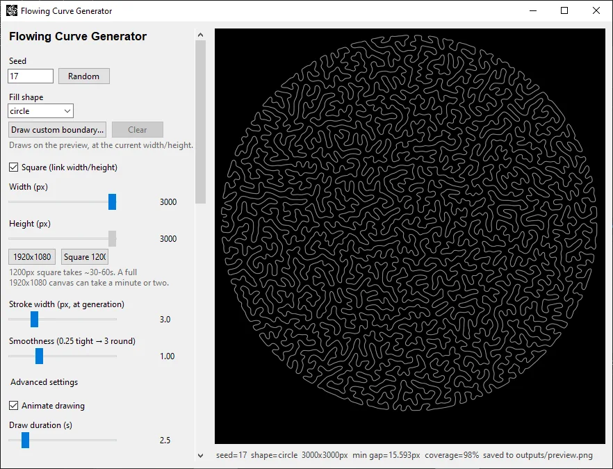
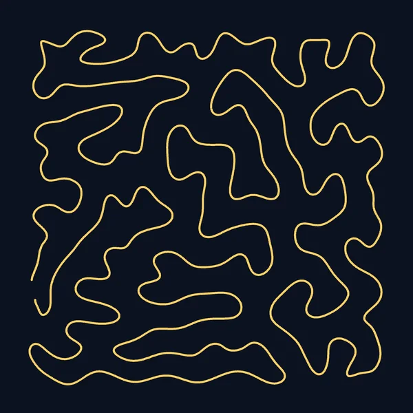
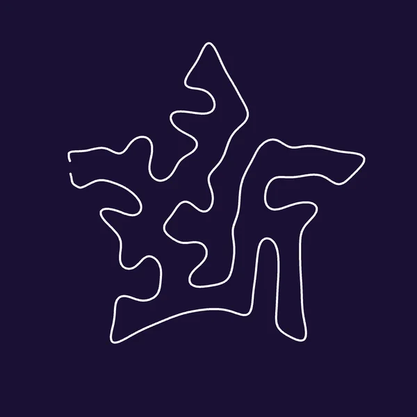
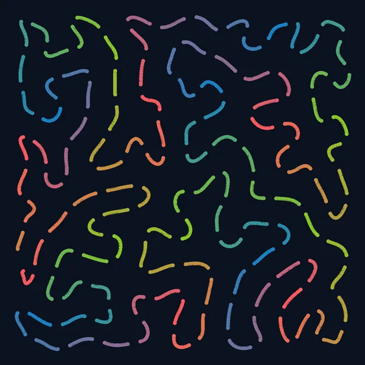
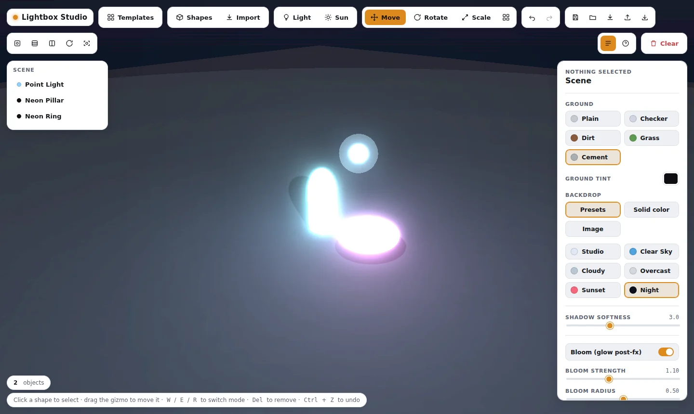
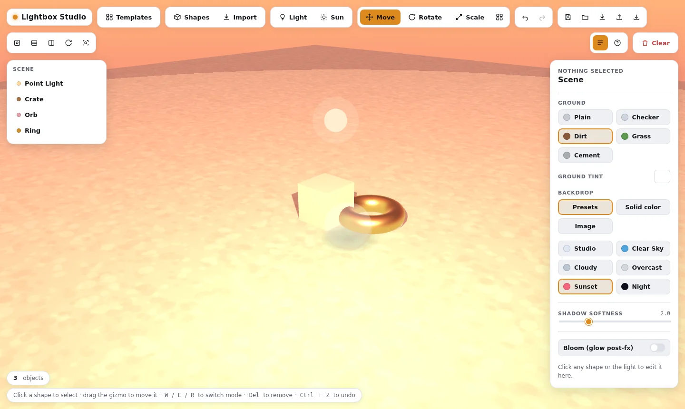
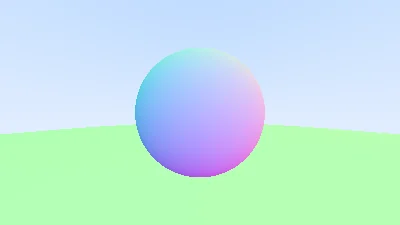
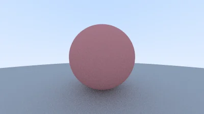
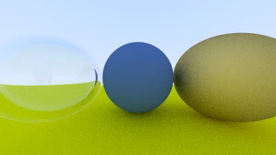
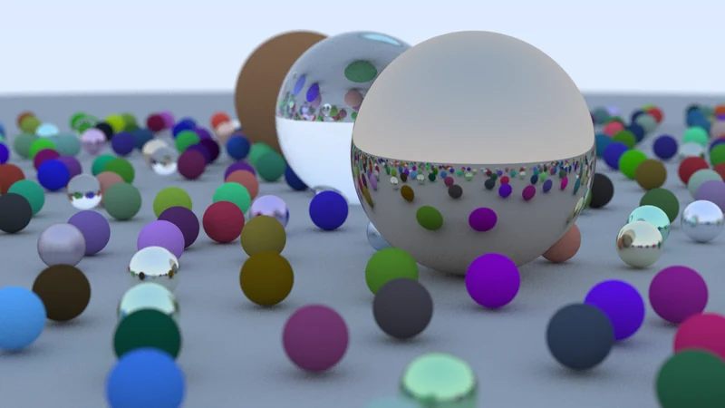

Personal projects
Things I've built, all in one place.
This is my personal projects page. Scroll down and you'll find a short description of each project, a few pictures, and a link to its page.
See the projectsFlowing Curve Generator
One unbroken line that fills a whole shape.
It draws a single, continuous, non-intersecting organic line from edge to edge, like one long strand of string laid down by hand. Pick a shape (or draw your own boundary), tune how it flows, then export it as a PNG, an SVG, or a pen-plotter-ready SVG sized in real millimeters.
There's also a looping “color crawl” mode with chasing lights, which can run as an animated live wallpaper or a screen saver on Windows.
- Fill any shape. Eight built-in shapes, or draw your own boundary freehand.
- Any canvas size. Square, widescreen, or any rectangle, filled with no cropping.
- Draw-in animation. Watch the curve get traced stroke by stroke.
- Pen-plotter export. Clean SVG in real-world millimeters.
- Live wallpaper and screen saver. The color crawl, on your Windows desktop.




Lightbox Studio
A 3D lighting and materials sandbox that runs in the browser.
Drop shapes and lights into a scene, move them around with a gizmo, and watch how materials, glow, and shadows respond in real time. It's a single HTML file built on Three.js, so there's nothing to install and no build step.
Scenes built here can also be exported and rendered by my C++ ray tracer (more below).
- Shapes, lights, and a sun. Multiple lights, plus glowing objects that act as light sources.
- Materials and textures. Shadow softness, bloom, and ground and backdrop presets.
- Real editing tools. Multi-select, snapping, grouping, array and radial duplicates, undo and redo.
- Import and save. Bring in 3D models, and save or load scenes as files.
- Starter templates. Studio Trio, Still Life, and Neon Night.


Also in the repo: a C++ ray tracer
Lightbox Studio lives inside my ray tracer's repository. The ray tracer is a from-scratch C++17 renderer that follows the Ray Tracing in One Weekend series: diffuse, metal, and glass materials, depth of field, multithreaded rendering, and a bounding volume hierarchy to keep big scenes fast.




More on the way.
New projects will show up here as I build them.